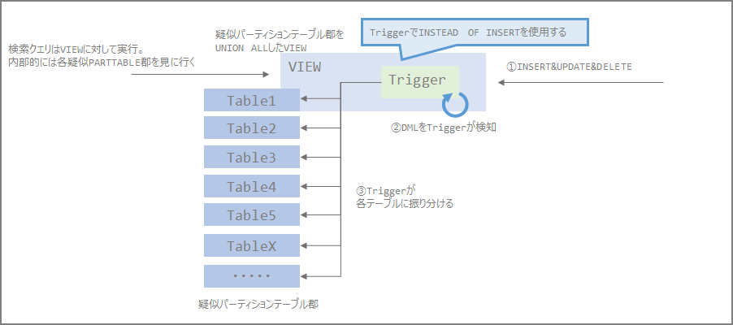

Oracle Partiotionオプションの代替策(View+Trigger)を試してみる
はじめに
下記に検討した内容の続きとして、Oracle Partitionの代替案というのをやってみた。
Oracle Enterprise EditionからStandard Editionへのダウングレード検討メモ | my opinion is my own https://zatoima.github.io/oracle-ee-se2-migration-to-aws-rds-for-oracle.html
大規模テーブルや履歴データなどはパーティション機能を使うことはよくあるが、Oracle EEからSE2へのダウングレードを検討する場合は、Partitionオプションを使用できないため、どうにかする必要がある。

パーティションを使う理由というのはいくつかあって、下記が代表的なメリットとして考えられる。
- パーティションプルーニングを行うことでの性能向上
- パーティション単位でパラレル化出来ることによる性能向上
- 複数パーティションに跨って検索する場合に有効
- パーティション単位でドロップ出来ることでの運用性向上
- これが出来ない場合は、DELETE文を発行する必要があり、IO的にも時間的にも厳しい
少し調べてみるといくつかの代替策が見つかったので、今回はその代替案を実施してみる。参考にしたのはこのあたり。この記事では疑似パーティションと呼ぶ
Implementing table partitioning in Oracle Standard Edition: Part 1 | AWS Database Blog https://aws.amazon.com/jp/blogs/database/implementing-table-partitioning-in-oracle-standard-edition-part-1/
Partitioning and Oracle Standard Edition | Oracle FAQ https://www.orafaq.com/node/2992
Oracle Partitioning and Standard Edition | the gruffdba https://gruffdba.wordpress.com/2018/08/05/oracle-partitioning-and-standard-edition/
Oracle SEでINSERT TRIGGERとVIEWで作るパーティション - kenken0807_DBメモ https://kenken0807.hatenablog.com/entry/2015/07/21/161333
パーティション代替の仕組みのイメージ図
下記の図に書いている通り、TriggerとViewを使用した代替案となる。この方法はOracleでPartitionが実装されている前（Oracle 7時代？）はこの方法であり、PostgreSQLの9.6以前は継承とトリガーを使った方式になっていてこのイメージ図に近い。
疑似パーティションテーブル郡を増やす場合には、TableやView定義、及びTriggerの修正が必要となってくるので運用面で大丈夫かは別途確認する必要がある。

ポイントとしては次の通り（ここではレンジパーティションをイメージ）
- 各年月単位に区切ったデータが入るテーブルを複数用意する
- SELECTやDML（INSERT、UPDATED、DELETE）の対象先テーブルはVIEWとなる
- VIEWは各テーブルをUNION ALLでJOINした定義とする
- DML（ここではINSERT）が飛んできた時にTriggerを起動し、対象の年月がどのパーティションに入るべきかをIF文、CASE文等で判別し、各テーブルに入れる
- VIEWに索引付与ということは出来ないので、必然的にローカル索引となる。（＝パーティションで使用出来ていたグローバル索引は付与出来ない）
- パーティションキーにローカル索引を作成する
流れ
この方法を試すにあたり、移行元（EEのパーティション表構成）と移行先の環境（疑似パーティション構成）での性能検証比較を主にやりたかったので下記の流れで実施する。
-
EEのパーティション表を使用
- 大容量テーブルを作ってEEのパーティション機能を使って性能の簡易検証を実施
- パーティション有り無し、索引有り無しを検証
-
疑似パーティションを使用
-
環境構成は
1.EEのパーティション表を使用と一緒。パーティション部分を疑似パーティション構成とする -
疑似パーティション有り無し、索引有り無しを検証
-
EEのパーティション表を使用
環境作成からスタート
ユーザ作成
drop user TESTPART;
create user TESTPART identified by oracle;
grant dba to TESTPART;
conn testpart/oracle@rdsoraclev19c.xxxx.ap-northeast-1.rds.amazonaws.com:1521/ora19c
-
パーティション有り、索引無しパターン
パーティションテーブルを作成
CREATE TABLE PARTTEST_EE_PART(
id number,
ymd DATE,
str1 VARCHAR(120),
str2 VARCHAR(500),
str3 VARCHAR2(10),
str4 NUMBER(9,0)
)
PARTITION BY RANGE(ymd)
(
PARTITION ymd_p00 VALUES LESS THAN(TO_DATE('2010/01/01','YYYY/MM/DD')),
PARTITION ymd_p01 VALUES LESS THAN(TO_DATE('2011/01/01','YYYY/MM/DD')),
PARTITION ymd_p02 VALUES LESS THAN(TO_DATE('2012/01/01','YYYY/MM/DD')),
PARTITION ymd_p03 VALUES LESS THAN(TO_DATE('2013/01/01','YYYY/MM/DD')),
PARTITION ymd_p04 VALUES LESS THAN(TO_DATE('2014/01/01','YYYY/MM/DD')),
PARTITION ymd_p05 VALUES LESS THAN(TO_DATE('2015/01/01','YYYY/MM/DD')),
PARTITION ymd_p06 VALUES LESS THAN(TO_DATE('2016/01/01','YYYY/MM/DD')),
PARTITION ymd_p07 VALUES LESS THAN(TO_DATE('2017/01/01','YYYY/MM/DD')),
PARTITION ymd_p08 VALUES LESS THAN(TO_DATE('2018/01/01','YYYY/MM/DD')),
PARTITION ymd_p09 VALUES LESS THAN(TO_DATE('2019/01/01','YYYY/MM/DD')),
PARTITION ymd_p10 VALUES LESS THAN(TO_DATE('2020/01/01','YYYY/MM/DD')),
PARTITION ymd_p11 VALUES LESS THAN(TO_DATE('2021/01/01','YYYY/MM/DD'))
);
100万件のデータ作成
INSERT /*+ APPEND */ INTO PARTTEST_EE_PART NOLOGGING
SELECT
parttest_seq.nextval,
TO_DATE('20100101','YYYYMMDD') +MOD(ABS(DBMS_RANDOM.RANDOM()),TO_DATE('20200101','YYYYMMDD')-TO_DATE('20100101','YYYYMMDD')) DT
,DBMS_RANDOM.STRING('X', 50)
,'あいうえおかきくけこさしすせそ'
,TO_CHAR(ABS(DBMS_RANDOM.RANDOM()),'FM0000000000') CD
,MOD(DBMS_RANDOM.RANDOM(),100000) KIN
FROM
(SELECT 0 FROM ALL_CATALOG WHERE ROWNUM <= 1000)
,(SELECT 0 FROM ALL_CATALOG WHERE ROWNUM <= 1000);
commit;
データをInsert ~ Selectで増幅（たくさん）
insert into PARTTEST_EE_PART NOLOGGING select * from PARTTEST_EE_PART;
commit;
select count(*) from PARTTEST_EE_PART;
約1億件ちょっと
SQL> select count(*) from PARTTEST_EE_PART;
COUNT(*)
____________
128000000
num_rowsを確認するために統計情報収集
exec DBMS_STATS.GATHER_TABLE_STATS(ownname=>'TESTPART',tabname=>'PARTTEST_EE_PART',cascade=>false,DEGREE =>4);
パーティションごとの件数を確認
select
TABLE_OWNER
,TABLE_NAME
,PARTITION_NAME
,NUM_ROWS
from
ALL_TAB_PARTITIONS
where table_name='PARTTEST_EE_PART'
order by
TABLE_NAME;
SQL> select
2 TABLE_OWNER
3 ,TABLE_NAME
4 ,PARTITION_NAME
5 ,NUM_ROWS
6 from
7 ALL_TAB_PARTITIONS
8 where table_name='PARTTEST_EE_PART'
9 order by
10 TABLE_NAME;
TABLE_OWNER TABLE_NAME PARTITION_NAME NUM_ROWS
______________ ___________________ _________________ ___________
TESTPART PARTTEST_EE_PART YMD_P00 0
TESTPART PARTTEST_EE_PART YMD_P01 12830976
TESTPART PARTTEST_EE_PART YMD_P02 12804736
TESTPART PARTTEST_EE_PART YMD_P03 12837760
TESTPART PARTTEST_EE_PART YMD_P04 12809088
TESTPART PARTTEST_EE_PART YMD_P05 12786176
TESTPART PARTTEST_EE_PART YMD_P06 12755840
TESTPART PARTTEST_EE_PART YMD_P07 12817408
TESTPART PARTTEST_EE_PART YMD_P08 12797184
TESTPART PARTTEST_EE_PART YMD_P09 12803072
TESTPART PARTTEST_EE_PART YMD_P10 12757760
TESTPART PARTTEST_EE_PART YMD_P11 0
この環境で下記SQLをパーティションありなし、索引ありなしで時間を計測。2年分に跨るデータの件数を確認。
exec rdsadmin.rdsadmin_util.flush_shared_pool;
exec rdsadmin.rdsadmin_util.flush_buffer_cache;
set autotrace on
set timing on
select count(*) from PARTTEST_EE_PART where ymd between to_date('2017/05/01 11:00:00','YYYY/MM/DD HH24:MI:SS') and to_date('2019/05/11 12:00:00','YYYY/MM/DD HH24:MI:SS');
実行結果
SQL> select count(*) from PARTTEST_EE_PART where ymd between to_date('2017/05/01 11:00:00','YYYY/MM/DD HH24:MI:SS') and to_date('2019/05/11 12:00:00','YYYY/MM/DD HH24:MI:SS');
COUNT(*)
___________
25941120
Explain Plan
-----------------------------------------------------------
PLAN_TABLE_OUTPUT
_________________________________________________________________________________________________________________
Plan hash value: 2195020283
--------------------------------------------------------------------------------------------------------------
| Id | Operation | Name | Rows | Bytes | Cost (%CPU)| Time | Pstart| Pstop |
--------------------------------------------------------------------------------------------------------------
| 0 | SELECT STATEMENT | | 1 | 8 | 192K (1)| 00:00:08 | | |
| 1 | SORT AGGREGATE | | 1 | 8 | | | | |
| 2 | PARTITION RANGE ITERATOR| | 26M| 198M| 192K (1)| 00:00:08 | 9 | 11 |
|* 3 | TABLE ACCESS FULL | PARTTEST_EE_PART | 26M| 198M| 192K (1)| 00:00:08 | 9 | 11 |
--------------------------------------------------------------------------------------------------------------
Predicate Information (identified by operation id):
---------------------------------------------------
3 - filter("YMD">=TO_DATE(' 2017-05-01 11:00:00', 'syyyy-mm-dd hh24:mi:ss') AND "YMD"<=TO_DATE('
2019-05-11 12:00:00', 'syyyy-mm-dd hh24:mi:ss'))
Statistics
-----------------------------------------------------------
249 CPU used by this session
250 CPU used when call started
865 DB time
3 Requests to/from client
10 enqueue releases
10 enqueue requests
5028 non-idle wait count
621 non-idle wait time
200 opened cursors cumulative
1 opened cursors current
5567 physical read total IO requests
5504 physical read total multi block requests
1 pinned cursors current
9 process last non-idle time
460 recursive calls
2 recursive cpu usage
701356 session logical reads
621 user I/O wait time
4 user calls
Elapsed: 00:00:08.748
SQL>
-
パーティション無し、索引無しパターン
非パーティション表を作成して、データを同一とする
CREATE TABLE PARTTEST_EE_NONPART(
id number,
ymd DATE,
str1 VARCHAR(120),
str2 VARCHAR(500),
str3 VARCHAR2(10),
str4 NUMBER(9,0)
);
insert into PARTTEST_EE_NONPART NOLOGGING select * from PARTTEST_EE_PART;
select count(*) from PARTTEST_EE_PART;
時間を計測
exec rdsadmin.rdsadmin_util.flush_shared_pool;
exec rdsadmin.rdsadmin_util.flush_buffer_cache;
set autotrace on
set timing on
select count(*) from PARTTEST_EE_NONPART where ymd between to_date('2017/05/01 11:00:00','YYYY/MM/DD HH24:MI:SS') and to_date('2019/05/11 12:00:00','YYYY/MM/DD HH24:MI:SS');
SQL> select count(*) from PARTTEST_EE_NONPART where ymd between to_date('2017/05/01 11:00:00','YYYY/MM/DD HH24:MI:SS') and to_date('2019/05/11 12:00:00','YYYY/MM/DD HH24:MI:SS');
COUNT(*)
___________
25941120
Explain Plan
-----------------------------------------------------------
PLAN_TABLE_OUTPUT
_____________________________________________________________________________________________
Plan hash value: 3084685461
------------------------------------------------------------------------------------------
| Id | Operation | Name | Rows | Bytes | Cost (%CPU)| Time |
------------------------------------------------------------------------------------------
| 0 | SELECT STATEMENT | | 1 | 8 | 635K (1)| 00:00:25 |
| 1 | SORT AGGREGATE | | 1 | 8 | | |
|* 2 | TABLE ACCESS FULL| PARTTEST_EE_NONPART | 26M| 198M| 635K (1)| 00:00:25 |
------------------------------------------------------------------------------------------
Predicate Information (identified by operation id):
---------------------------------------------------
2 - filter("YMD">=TO_DATE(' 2017-05-01 11:00:00', 'syyyy-mm-dd hh24:mi:ss')
AND "YMD"<=TO_DATE(' 2019-05-11 12:00:00', 'syyyy-mm-dd hh24:mi:ss'))
Statistics
-----------------------------------------------------------
1077 CPU used by this session
1078 CPU used when call started
3105 DB time
3 Requests to/from client
5 enqueue releases
5 enqueue requests
15184 non-idle wait count
2045 non-idle wait time
42 opened cursors cumulative
1 opened cursors current
18335 physical read total IO requests
18288 physical read total multi block requests
1 pinned cursors current
31 process last non-idle time
115 recursive calls
4667336 session logical reads
2045 user I/O wait time
4 user calls
Elapsed: 00:00:31.136
-
パーティション有り、索引有りパターン
索引作成
drop index PARTTEST_EE_PART_IDX;
create index PARTTEST_EE_PART_IDX ON PARTTEST_EE_PART(ymd) local nologging parallel 4;
実行結果
SQL> set autotrace on
Autotrace Enabled
Shows the execution plan as well as statistics of the statement.
SQL> set timing on
SQL> select count(*) from PARTTEST_EE_PART where ymd between to_date('2017/05/01 11:00:00','YYYY/MM/DD HH24:MI:SS') and to_date('2019/05/11 12:00:00','YYYY/MM/DD HH24:MI:SS');
COUNT(*)
___________
25941120
Explain Plan
-----------------------------------------------------------
PLAN_TABLE_OUTPUT
________________________________________________________________________________________________________________________________________________________
Plan hash value: 2795901320
-----------------------------------------------------------------------------------------------------------------------------------------------------
| Id | Operation | Name | Rows | Bytes | Cost (%CPU)| Time | Pstart| Pstop | TQ |IN-OUT| PQ Distrib |
-----------------------------------------------------------------------------------------------------------------------------------------------------
| 0 | SELECT STATEMENT | | 1 | 8 | 69179 (1)| 00:00:03 | | | | | |
| 1 | SORT AGGREGATE | | 1 | 8 | | | | | | | |
| 2 | PX COORDINATOR | | | | | | | | | | |
| 3 | PX SEND QC (RANDOM) | :TQ10000 | 1 | 8 | | | | | Q1,00 | P->S | QC (RAND) |
| 4 | SORT AGGREGATE | | 1 | 8 | | | | | Q1,00 | PCWP | |
| 5 | PX PARTITION RANGE ITERATOR| | 26M| 198M| 69179 (1)| 00:00:03 | 9 | 11 | Q1,00 | PCWC | |
|* 6 | INDEX RANGE SCAN | PARTTEST_EE_PART_IDX | 26M| 198M| 69179 (1)| 00:00:03 | 9 | 11 | Q1,00 | PCWP | |
-----------------------------------------------------------------------------------------------------------------------------------------------------
Predicate Information (identified by operation id):
---------------------------------------------------
6 - access("YMD">=TO_DATE(' 2017-05-01 11:00:00', 'syyyy-mm-dd hh24:mi:ss') AND "YMD"<=TO_DATE(' 2019-05-11 12:00:00', 'syyyy-mm-dd
hh24:mi:ss'))
Statistics
-----------------------------------------------------------
277 CPU used by this session
3 CPU used when call started
3654 DB time
3 Requests to/from client
6 enqueue conversions
18 enqueue releases
21 enqueue requests
1770 in call idle wait time
3 messages sent
68920 non-idle wait count
1704 non-idle wait time
318 opened cursors cumulative
1 opened cursors current
68894 physical read total IO requests
1 pinned cursors current
9 process last non-idle time
779 recursive calls
277 recursive cpu usage
69883 session logical reads
1703 user I/O wait time
16 user calls
Elapsed: 00:00:09.506
-
パーティション無し、索引有りパターン
drop index PARTTEST_EE_NONPART_IDX;
create index PARTTEST_EE_NONPART_IDX ON PARTTEST_EE_NONPART(ymd) nologging parallel 4;
実行結果
SQL> select count(*) from PARTTEST_EE_NONPART where ymd between to_date('2017/05/01 11:00:00','YYYY/MM/DD HH24:MI:SS') and to_date('2019/05/11 12:00:00','YYYY/MM/DD HH24:MI:SS');
COUNT(*)
___________
25941120
Explain Plan
-----------------------------------------------------------
PLAN_TABLE_OUTPUT
________________________________________________________________________________________________
Plan hash value: 1281488453
---------------------------------------------------------------------------------------------
| Id | Operation | Name | Rows | Bytes | Cost (%CPU)| Time |
---------------------------------------------------------------------------------------------
| 0 | SELECT STATEMENT | | 1 | 9 | 76083 (1)| 00:00:03 |
| 1 | SORT AGGREGATE | | 1 | 9 | | |
|* 2 | INDEX RANGE SCAN| PARTTEST_EE_NONPART_IDX | 33M| 290M| 76083 (1)| 00:00:03 |
---------------------------------------------------------------------------------------------
Predicate Information (identified by operation id):
---------------------------------------------------
2 - access("YMD">=TO_DATE(' 2017-05-01 11:00:00', 'syyyy-mm-dd hh24:mi:ss') AND
"YMD"<=TO_DATE(' 2019-05-11 12:00:00', 'syyyy-mm-dd hh24:mi:ss'))
Note
-----
- dynamic statistics used: dynamic sampling (level=2)
Statistics
-----------------------------------------------------------
236 CPU used by this session
237 CPU used when call started
2182 DB time
3 Requests to/from client
5 enqueue releases
5 enqueue requests
68838 non-idle wait count
2030 non-idle wait time
25 opened cursors cumulative
1 opened cursors current
68834 physical read total IO requests
1 pinned cursors current
22 process last non-idle time
82 recursive calls
1 recursive cpu usage
68890 session logical reads
2030 user I/O wait time
4 user calls
Elapsed: 00:00:21.901
結果
| パーティションあり | パーティションなし | |
|---|---|---|
| 索引あり | 9.506 | 21.901 |
| 索引なし | 8.748 | 31.136 |
疑似パーティションを使用
環境作成からスタート
疑似パーティションのイメージ（再掲）
パーティション表のイメージ
下記のようなパーティションを作りたい。（これを作るわけではない）
CREATE TABLE PARTTEST_EE_PART(
id number,
ymd DATE,
str1 VARCHAR(120),
str2 VARCHAR(500),
str3 VARCHAR2(10),
str4 NUMBER(9,0)
)
PARTITION BY RANGE(ymd)
(
PARTITION ymd_p00 VALUES LESS THAN(TO_DATE('2010/01/01','YYYY/MM/DD')),
PARTITION ymd_p01 VALUES LESS THAN(TO_DATE('2011/01/01','YYYY/MM/DD')),
PARTITION ymd_p02 VALUES LESS THAN(TO_DATE('2012/01/01','YYYY/MM/DD')),
PARTITION ymd_p03 VALUES LESS THAN(TO_DATE('2013/01/01','YYYY/MM/DD')),
PARTITION ymd_p04 VALUES LESS THAN(TO_DATE('2014/01/01','YYYY/MM/DD')),
PARTITION ymd_p05 VALUES LESS THAN(TO_DATE('2015/01/01','YYYY/MM/DD')),
PARTITION ymd_p06 VALUES LESS THAN(TO_DATE('2016/01/01','YYYY/MM/DD')),
PARTITION ymd_p07 VALUES LESS THAN(TO_DATE('2017/01/01','YYYY/MM/DD')),
PARTITION ymd_p08 VALUES LESS THAN(TO_DATE('2018/01/01','YYYY/MM/DD')),
PARTITION ymd_p09 VALUES LESS THAN(TO_DATE('2019/01/01','YYYY/MM/DD')),
PARTITION ymd_p10 VALUES LESS THAN(TO_DATE('2020/01/01','YYYY/MM/DD')),
PARTITION ymd_p11 VALUES LESS THAN(TO_DATE('2021/01/01','YYYY/MM/DD'))
);
表で対比する場合は下記の通り。
| パーティション名 | テーブル |
|---|---|
| ymd_p00 | PARTTEST_SE_PART_1 |
| ymd_p01 | PARTTEST_SE_PART_2 |
| ymd_p02 | PARTTEST_SE_PART_3 |
| ymd_p03 | PARTTEST_SE_PART_4 |
| ymd_p04 | PARTTEST_SE_PART_5 |
| ymd_p05 | PARTTEST_SE_PART_6 |
| ymd_p06 | PARTTEST_SE_PART_7 |
| ymd_p07 | PARTTEST_SE_PART_8 |
| ymd_p08 | PARTTEST_SE_PART_9 |
| ymd_p09 | PARTTEST_SE_PART_10 |
| ymd_p10 | PARTTEST_SE_PART_11 |
| ymd_p11 | PARTTEST_SE_PART_12 |
テーブル作成（＝疑似パーティションテーブル郡）
-- Partition like table 1
CREATE TABLE PARTTEST_SE_PART_1
(
id number,
ymd DATE,
str1 VARCHAR(120),
str2 VARCHAR(500),
str3 VARCHAR2(10),
str4 NUMBER(9,0)
);
-- Partition like table 2
CREATE TABLE PARTTEST_SE_PART_2
(
id number,
ymd DATE,
str1 VARCHAR(120),
str2 VARCHAR(500),
str3 VARCHAR2(10),
str4 NUMBER(9,0)
);
-- Partition like table 3
CREATE TABLE PARTTEST_SE_PART_3
(
id number,
ymd DATE,
str1 VARCHAR(120),
str2 VARCHAR(500),
str3 VARCHAR2(10),
str4 NUMBER(9,0)
);
-- Partition like table 4
CREATE TABLE PARTTEST_SE_PART_4
(
id number,
ymd DATE,
str1 VARCHAR(120),
str2 VARCHAR(500),
str3 VARCHAR2(10),
str4 NUMBER(9,0)
);
-- Partition like table 5
CREATE TABLE PARTTEST_SE_PART_5
(
id number,
ymd DATE,
str1 VARCHAR(120),
str2 VARCHAR(500),
str3 VARCHAR2(10),
str4 NUMBER(9,0)
);
-- Partition like table 6
CREATE TABLE PARTTEST_SE_PART_6
(
id number,
ymd DATE,
str1 VARCHAR(120),
str2 VARCHAR(500),
str3 VARCHAR2(10),
str4 NUMBER(9,0)
);
-- Partition like table 7
CREATE TABLE PARTTEST_SE_PART_7
(
id number,
ymd DATE,
str1 VARCHAR(120),
str2 VARCHAR(500),
str3 VARCHAR2(10),
str4 NUMBER(9,0)
);
-- Partition like table 8
CREATE TABLE PARTTEST_SE_PART_8
(
id number,
ymd DATE,
str1 VARCHAR(120),
str2 VARCHAR(500),
str3 VARCHAR2(10),
str4 NUMBER(9,0)
);
-- Partition like table 9
CREATE TABLE PARTTEST_SE_PART_9
(
id number,
ymd DATE,
str1 VARCHAR(120),
str2 VARCHAR(500),
str3 VARCHAR2(10),
str4 NUMBER(9,0)
);
-- Partition like table 10
CREATE TABLE PARTTEST_SE_PART_10
(
id number,
ymd DATE,
str1 VARCHAR(120),
str2 VARCHAR(500),
str3 VARCHAR2(10),
str4 NUMBER(9,0)
);
-- Partition like table 11
CREATE TABLE PARTTEST_SE_PART_11
(
id number,
ymd DATE,
str1 VARCHAR(120),
str2 VARCHAR(500),
str3 VARCHAR2(10),
str4 NUMBER(9,0)
);
-- Partition like table 12
CREATE TABLE PARTTEST_SE_PART_12
(
id number,
ymd DATE,
str1 VARCHAR(120),
str2 VARCHAR(500),
str3 VARCHAR2(10),
str4 NUMBER(9,0)
);
ビューを作成
CREATE VIEW PARTTEST_SE_PART AS
SELECT * FROM PARTTEST_SE_PART_1 UNION ALL
SELECT * FROM PARTTEST_SE_PART_2 UNION ALL
SELECT * FROM PARTTEST_SE_PART_3 UNION ALL
SELECT * FROM PARTTEST_SE_PART_4 UNION ALL
SELECT * FROM PARTTEST_SE_PART_5 UNION ALL
SELECT * FROM PARTTEST_SE_PART_6 UNION ALL
SELECT * FROM PARTTEST_SE_PART_7 UNION ALL
SELECT * FROM PARTTEST_SE_PART_8 UNION ALL
SELECT * FROM PARTTEST_SE_PART_9 UNION ALL
SELECT * FROM PARTTEST_SE_PART_10 UNION ALL
SELECT * FROM PARTTEST_SE_PART_11 UNION ALL
SELECT * FROM PARTTEST_SE_PART_12
/
INSERT用のトリガーを作成
今回はINSERT用のトリガーしか作っていないが、DELETEやUPDATEも入って来る場合はDMLに応じたトリガーが必要。今回は擬似的にレンジパーティションに作っているが、疑似リストパーティション、おそらく疑似ハッシュパーティションも出来るはず。
CREATE OR REPLACE TRIGGER PARTTEST_SE_PART_INSERT
INSTEAD OF INSERT
ON PARTTEST_SE_PART
FOR EACH ROW
DECLARE
n_part date;
BEGIN
n_part := :NEW.ymd;
IF n_part between to_date('2009/01/01','YYYY/MM/DD') and to_date('2010/01/01','YYYY/MM/DD') THEN
insert into PARTTEST_SE_PART_1 values(:new.id,:new.ymd,:new.str1,:new.str2,:new.str3,:new.str4);
ELSIF n_part between to_date('2010/01/01','YYYY/MM/DD') and to_date('2010/12/31','YYYY/MM/DD') THEN
insert into PARTTEST_SE_PART_2 values(:new.id,:new.ymd,:new.str1,:new.str2,:new.str3,:new.str4);
ELSIF n_part between to_date('2011/01/01','YYYY/MM/DD') and to_date('2011/12/31','YYYY/MM/DD') THEN
insert into PARTTEST_SE_PART_3 values(:new.id,:new.ymd,:new.str1,:new.str2,:new.str3,:new.str4);
ELSIF n_part between to_date('2012/01/01','YYYY/MM/DD') and to_date('2012/12/31','YYYY/MM/DD') THEN
insert into PARTTEST_SE_PART_4 values(:new.id,:new.ymd,:new.str1,:new.str2,:new.str3,:new.str4);
ELSIF n_part between to_date('2013/01/01','YYYY/MM/DD') and to_date('2013/12/31','YYYY/MM/DD') THEN
insert into PARTTEST_SE_PART_5 values(:new.id,:new.ymd,:new.str1,:new.str2,:new.str3,:new.str4);
ELSIF n_part between to_date('2014/01/01','YYYY/MM/DD') and to_date('2014/12/31','YYYY/MM/DD') THEN
insert into PARTTEST_SE_PART_6 values(:new.id,:new.ymd,:new.str1,:new.str2,:new.str3,:new.str4);
ELSIF n_part between to_date('2015/01/01','YYYY/MM/DD') and to_date('2015/12/31','YYYY/MM/DD') THEN
insert into PARTTEST_SE_PART_7 values(:new.id,:new.ymd,:new.str1,:new.str2,:new.str3,:new.str4);
ELSIF n_part between to_date('2016/01/01','YYYY/MM/DD') and to_date('2016/12/31','YYYY/MM/DD') THEN
insert into PARTTEST_SE_PART_8 values(:new.id,:new.ymd,:new.str1,:new.str2,:new.str3,:new.str4);
ELSIF n_part between to_date('2017/01/01','YYYY/MM/DD') and to_date('2017/12/31','YYYY/MM/DD') THEN
insert into PARTTEST_SE_PART_9 values(:new.id,:new.ymd,:new.str1,:new.str2,:new.str3,:new.str4);
ELSIF n_part between to_date('2018/01/01','YYYY/MM/DD') and to_date('2018/12/31','YYYY/MM/DD') THEN
insert into PARTTEST_SE_PART_10 values(:new.id,:new.ymd,:new.str1,:new.str2,:new.str3,:new.str4);
ELSIF n_part between to_date('2019/01/01','YYYY/MM/DD') and to_date('2019/12/31','YYYY/MM/DD') THEN
insert into PARTTEST_SE_PART_11 values(:new.id,:new.ymd,:new.str1,:new.str2,:new.str3,:new.str4);
ELSIF n_part between to_date('2020/01/01','YYYY/MM/DD') and to_date('2020/12/31','YYYY/MM/DD') THEN
insert into PARTTEST_SE_PART_12 values(:new.id,:new.ymd,:new.str1,:new.str2,:new.str3,:new.str4);
END IF;
END;
/
INSERTテスト
試しに１件だけビューに対してINSERTを実施してみる。
insert into PARTTEST_SE_PART values(1,TO_DATE('2012/01/01','YYYY/MM/DD'),DBMS_RANDOM.STRING('X', 50),'あああああ','AAAA',1);
SQL> insert into PARTTEST_SE_PART values(1,TO_DATE('2012/01/01','YYYY/MM/DD'),DBMS_RANDOM.STRING('X', 50),'あああああ','AAAA',1);
1 row inserted.
Elapsed: 00:00:00.092
SQL> commit;
Commit complete.
Elapsed: 00:00:00.004
SQL> select * from PARTTEST_SE_PART;
ID YMD STR1 STR2 STR3 STR4
_____ ____________ _____________________________________________________ ________ _______ _______
1 01-JAN-12 XDB01K5LVWKZC5KH5XRRV6Z2UAGU40I3U06ZPQ1H0JV5H7RGEC あああああ AAAA 1
Elapsed: 00:00:00.113
SQL>
ビューとテーブルの件数を確認
select 'PARTTEST_SE_PART',count(*) rowcount from PARTTEST_SE_PART
union all
select 'PARTTEST_SE_PART_1',count(*) rowcount from PARTTEST_SE_PART_1
union all
select 'PARTTEST_SE_PART_2',count(*) rowcount from PARTTEST_SE_PART_2
union all
select 'PARTTEST_SE_PART_3',count(*) rowcount from PARTTEST_SE_PART_3
union all
select 'PARTTEST_SE_PART_4',count(*) rowcount from PARTTEST_SE_PART_4
union all
select 'PARTTEST_SE_PART_5',count(*) rowcount from PARTTEST_SE_PART_5
union all
select 'PARTTEST_SE_PART_6',count(*) rowcount from PARTTEST_SE_PART_6
union all
select 'PARTTEST_SE_PART_7',count(*) rowcount from PARTTEST_SE_PART_7
union all
select 'PARTTEST_SE_PART_8',count(*) rowcount from PARTTEST_SE_PART_8
union all
select 'PARTTEST_SE_PART_9',count(*) rowcount from PARTTEST_SE_PART_9
union all
select 'PARTTEST_SE_PART_10',count(*) rowcount from PARTTEST_SE_PART_10
union all
select 'PARTTEST_SE_PART_11',count(*) rowcount from PARTTEST_SE_PART_11
union all
select 'PARTTEST_SE_PART_12',count(*) rowcount from PARTTEST_SE_PART_12
;
正常にパーティションテーブルに入っていることを確認
'PARTTEST_SE_PART' ROWCOUNT
______________________ ___________
PARTTEST_SE_PART 1
PARTTEST_SE_PART_1 0
PARTTEST_SE_PART_2 0
PARTTEST_SE_PART_3 0
PARTTEST_SE_PART_4 1
PARTTEST_SE_PART_5 0
PARTTEST_SE_PART_6 0
PARTTEST_SE_PART_7 0
PARTTEST_SE_PART_8 0
PARTTEST_SE_PART_9 0
PARTTEST_SE_PART_10 0
PARTTEST_SE_PART_11 0
PARTTEST_SE_PART_12 0
13 rows selected.
データ作成
前半で検証したパーティションテーブルからデータを抽出する
insert into /*+ PARALLEL (4)) */ PARTTEST_SE_PART_1 NOLLOGING SELECT * FROM PARTTEST_EE_PART PARTITION(ymd_p00);
insert into /*+ PARALLEL (4)) */ PARTTEST_SE_PART_2 NOLLOGING SELECT * FROM PARTTEST_EE_PART PARTITION(ymd_p01);
insert into /*+ PARALLEL (4)) */ PARTTEST_SE_PART_3 NOLLOGING SELECT * FROM PARTTEST_EE_PART PARTITION(ymd_p02);
insert into /*+ PARALLEL (4)) */ PARTTEST_SE_PART_4 NOLLOGING SELECT * FROM PARTTEST_EE_PART PARTITION(ymd_p03);
insert into /*+ PARALLEL (4)) */ PARTTEST_SE_PART_5 NOLLOGING SELECT * FROM PARTTEST_EE_PART PARTITION(ymd_p04);
insert into /*+ PARALLEL (4)) */ PARTTEST_SE_PART_6 NOLLOGING SELECT * FROM PARTTEST_EE_PART PARTITION(ymd_p05);
insert into /*+ PARALLEL (4)) */ PARTTEST_SE_PART_7 NOLLOGING SELECT * FROM PARTTEST_EE_PART PARTITION(ymd_p06);
insert into /*+ PARALLEL (4)) */ PARTTEST_SE_PART_8 NOLLOGING SELECT * FROM PARTTEST_EE_PART PARTITION(ymd_p07);
insert into /*+ PARALLEL (4)) */ PARTTEST_SE_PART_9 NOLLOGING SELECT * FROM PARTTEST_EE_PART PARTITION(ymd_p08);
insert into /*+ PARALLEL (4)) */ PARTTEST_SE_PART_10 NOLLOGING SELECT * FROM PARTTEST_EE_PART PARTITION(ymd_p09);
insert into /*+ PARALLEL (4)) */ PARTTEST_SE_PART_11 NOLLOGING SELECT * FROM PARTTEST_EE_PART PARTITION(ymd_p10);
insert into /*+ PARALLEL (4)) */ PARTTEST_SE_PART_12 NOLLOGING SELECT * FROM PARTTEST_EE_PART PARTITION(ymd_p11);
commit;
データ件数の確認
select 'PARTTEST_SE_PART',count(*) rowcount from PARTTBL_MAIN
union all
select 'PARTTEST_SE_PART_1',count(*) rowcount from PARTTEST_SE_PART_1
union all
select 'PARTTEST_SE_PART_2',count(*) rowcount from PARTTEST_SE_PART_2
union all
select 'PARTTEST_SE_PART_3',count(*) rowcount from PARTTEST_SE_PART_3
union all
select 'PARTTEST_SE_PART_4',count(*) rowcount from PARTTEST_SE_PART_4
union all
select 'PARTTEST_SE_PART_5',count(*) rowcount from PARTTEST_SE_PART_5
union all
select 'PARTTEST_SE_PART_6',count(*) rowcount from PARTTEST_SE_PART_6
union all
select 'PARTTEST_SE_PART_7',count(*) rowcount from PARTTEST_SE_PART_7
union all
select 'PARTTEST_SE_PART_8',count(*) rowcount from PARTTEST_SE_PART_8
union all
select 'PARTTEST_SE_PART_9',count(*) rowcount from PARTTEST_SE_PART_9
union all
select 'PARTTEST_SE_PART_10',count(*) rowcount from PARTTEST_SE_PART_10
union all
select 'PARTTEST_SE_PART_11',count(*) rowcount from PARTTEST_SE_PART_11
union all
select 'PARTTEST_SE_PART_12',count(*) rowcount from PARTTEST_SE_PART_12
;
簡易性能検証
一つの疑似パーティションに約3000万件のデータで全体で1億2万件のデータが可能されている。
SQL> select 'PARTTEST_SE_PART',count(*) rowcount from PARTTBL_MAIN
2 union all
3 select 'PARTTEST_SE_PART_1',count(*) rowcount from PARTTEST_SE_PART_1
4 union all
5 select 'PARTTEST_SE_PART_2',count(*) rowcount from PARTTEST_SE_PART_2
6 union all
7 select 'PARTTEST_SE_PART_3',count(*) rowcount from PARTTEST_SE_PART_3
8 union all
9 select 'PARTTEST_SE_PART_4',count(*) rowcount from PARTTEST_SE_PART_4
10 union all
11 select 'PARTTEST_SE_PART_5',count(*) rowcount from PARTTEST_SE_PART_5
12 union all
13 select 'PARTTEST_SE_PART_6',count(*) rowcount from PARTTEST_SE_PART_6
14 union all
15 select 'PARTTEST_SE_PART_7',count(*) rowcount from PARTTEST_SE_PART_7
16 union all
17 select 'PARTTEST_SE_PART_8',count(*) rowcount from PARTTEST_SE_PART_8
18 union all
19 select 'PARTTEST_SE_PART_9',count(*) rowcount from PARTTEST_SE_PART_9
20 union all
21 select 'PARTTEST_SE_PART_10',count(*) rowcount from PARTTEST_SE_PART_10
22 union all
23 select 'PARTTEST_SE_PART_11',count(*) rowcount from PARTTEST_SE_PART_11
24 union all
25 select 'PARTTEST_SE_PART_12',count(*) rowcount from PARTTEST_SE_PART_12
26 ;
'PARTTEST_SE_PART' ROWCOUNT
______________________ _____________
PARTTEST_SE_PART 2017394688
PARTTEST_SE_PART_1 0
PARTTEST_SE_PART_2 12830976
PARTTEST_SE_PART_3 12804736
PARTTEST_SE_PART_4 12837760
PARTTEST_SE_PART_5 12809088
PARTTEST_SE_PART_6 12786176
PARTTEST_SE_PART_7 12755840
PARTTEST_SE_PART_8 12817408
PARTTEST_SE_PART_9 12797184
PARTTEST_SE_PART_10 12803072
PARTTEST_SE_PART_11 12757760
PARTTEST_SE_PART_12 0
13 rows selected.
SQL>
パーティション表でも疑似パーティションでもない普通のテーブルを作成
drop table PARTTEST_SE_NONPART;
CREATE TABLE PARTTEST_SE_NONPART
(
id number,
ymd DATE,
str1 VARCHAR(120),
str2 VARCHAR(500),
str3 VARCHAR2(10),
str4 NUMBER(9,0)
);
insert into /*+ PARALLEL (4)) */ PARTTEST_SE_NONPART NOLOGGING select * from PARTTEST_SE_PART;
疑似パーティション有り、索引無しパターン
ここから実際に簡易的な性能検証を実施してみる。
exec rdsadmin.rdsadmin_util.flush_shared_pool;
exec rdsadmin.rdsadmin_util.flush_buffer_cache;
set autotrace on
set timing on
set pages 2000 lin 2000
select count(*) from PARTTEST_SE_PART where ymd between to_date('2017/05/01 11:00:00','YYYY/MM/DD HH24:MI:SS') and to_date('2019/05/11 12:00:00','YYYY/MM/DD HH24:MI:SS');
実行結果
SQL> select count(*) from PARTTEST_SE_PART where ymd between to_date('2017/05/01 11:00:00','YYYY/MM/DD HH24:MI:SS') and to_date('2019/05/11 12:00:00','YYYY/MM/DD HH24:MI:SS');
COUNT(*)
___________
25941120
Explain Plan
-----------------------------------------------------------
PLAN_TABLE_OUTPUT
_______________________________________________________________________________________________
Plan hash value: 2206839629
--------------------------------------------------------------------------------------------
| Id | Operation | Name | Rows | Bytes | Cost (%CPU)| Time |
--------------------------------------------------------------------------------------------
| 0 | SELECT STATEMENT | | 1 | 9 | 642K (1)| 00:00:26 |
| 1 | SORT AGGREGATE | | 1 | 9 | | |
| 2 | VIEW | PARTTEST_SE_PART | 27M| 239M| 642K (1)| 00:00:26 |
| 3 | UNION-ALL | | | | | |
|* 4 | TABLE ACCESS FULL| PARTTEST_SE_PART_1 | 1 | 9 | 2 (0)| 00:00:01 |
|* 5 | TABLE ACCESS FULL| PARTTEST_SE_PART_2 | 2606 | 23454 | 64292 (1)| 00:00:03 |
|* 6 | TABLE ACCESS FULL| PARTTEST_SE_PART_3 | 2606 | 23454 | 64298 (1)| 00:00:03 |
|* 7 | TABLE ACCESS FULL| PARTTEST_SE_PART_4 | 2606 | 23454 | 64280 (1)| 00:00:03 |
|* 8 | TABLE ACCESS FULL| PARTTEST_SE_PART_5 | 2606 | 23454 | 64293 (1)| 00:00:03 |
|* 9 | TABLE ACCESS FULL| PARTTEST_SE_PART_6 | 2606 | 23454 | 64298 (1)| 00:00:03 |
|* 10 | TABLE ACCESS FULL| PARTTEST_SE_PART_7 | 2606 | 23454 | 64269 (1)| 00:00:03 |
|* 11 | TABLE ACCESS FULL| PARTTEST_SE_PART_8 | 2606 | 23454 | 64273 (1)| 00:00:03 |
|* 12 | TABLE ACCESS FULL| PARTTEST_SE_PART_9 | 9594K| 82M| 64294 (1)| 00:00:03 |
|* 13 | TABLE ACCESS FULL| PARTTEST_SE_PART_10 | 13M| 113M| 64287 (1)| 00:00:03 |
|* 14 | TABLE ACCESS FULL| PARTTEST_SE_PART_11 | 5094K| 43M| 64294 (1)| 00:00:03 |
|* 15 | TABLE ACCESS FULL| PARTTEST_SE_PART_12 | 1 | 9 | 2 (0)| 00:00:01 |
--------------------------------------------------------------------------------------------
Predicate Information (identified by operation id):
---------------------------------------------------
4 - filter("YMD">=TO_DATE(' 2017-05-01 11:00:00', 'syyyy-mm-dd hh24:mi:ss') AND
"YMD"<=TO_DATE(' 2019-05-11 12:00:00', 'syyyy-mm-dd hh24:mi:ss'))
5 - filter("YMD">=TO_DATE(' 2017-05-01 11:00:00', 'syyyy-mm-dd hh24:mi:ss') AND
"YMD"<=TO_DATE(' 2019-05-11 12:00:00', 'syyyy-mm-dd hh24:mi:ss'))
6 - filter("YMD">=TO_DATE(' 2017-05-01 11:00:00', 'syyyy-mm-dd hh24:mi:ss') AND
"YMD"<=TO_DATE(' 2019-05-11 12:00:00', 'syyyy-mm-dd hh24:mi:ss'))
7 - filter("YMD">=TO_DATE(' 2017-05-01 11:00:00', 'syyyy-mm-dd hh24:mi:ss') AND
"YMD"<=TO_DATE(' 2019-05-11 12:00:00', 'syyyy-mm-dd hh24:mi:ss'))
8 - filter("YMD">=TO_DATE(' 2017-05-01 11:00:00', 'syyyy-mm-dd hh24:mi:ss') AND
"YMD"<=TO_DATE(' 2019-05-11 12:00:00', 'syyyy-mm-dd hh24:mi:ss'))
9 - filter("YMD">=TO_DATE(' 2017-05-01 11:00:00', 'syyyy-mm-dd hh24:mi:ss') AND
"YMD"<=TO_DATE(' 2019-05-11 12:00:00', 'syyyy-mm-dd hh24:mi:ss'))
10 - filter("YMD">=TO_DATE(' 2017-05-01 11:00:00', 'syyyy-mm-dd hh24:mi:ss') AND
"YMD"<=TO_DATE(' 2019-05-11 12:00:00', 'syyyy-mm-dd hh24:mi:ss'))
11 - filter("YMD">=TO_DATE(' 2017-05-01 11:00:00', 'syyyy-mm-dd hh24:mi:ss') AND
"YMD"<=TO_DATE(' 2019-05-11 12:00:00', 'syyyy-mm-dd hh24:mi:ss'))
12 - filter("YMD">=TO_DATE(' 2017-05-01 11:00:00', 'syyyy-mm-dd hh24:mi:ss') AND
"YMD"<=TO_DATE(' 2019-05-11 12:00:00', 'syyyy-mm-dd hh24:mi:ss'))
13 - filter("YMD">=TO_DATE(' 2017-05-01 11:00:00', 'syyyy-mm-dd hh24:mi:ss') AND
"YMD"<=TO_DATE(' 2019-05-11 12:00:00', 'syyyy-mm-dd hh24:mi:ss'))
14 - filter("YMD">=TO_DATE(' 2017-05-01 11:00:00', 'syyyy-mm-dd hh24:mi:ss') AND
"YMD"<=TO_DATE(' 2019-05-11 12:00:00', 'syyyy-mm-dd hh24:mi:ss'))
15 - filter("YMD">=TO_DATE(' 2017-05-01 11:00:00', 'syyyy-mm-dd hh24:mi:ss') AND
"YMD"<=TO_DATE(' 2019-05-11 12:00:00', 'syyyy-mm-dd hh24:mi:ss'))
Note
-----
- dynamic statistics used: dynamic sampling (level=2)
Statistics
-----------------------------------------------------------
1600 CPU used by this session
1601 CPU used when call started
3853 DB time
42 Requests to/from client
30 enqueue releases
30 enqueue requests
19833 non-idle wait count
2523 non-idle wait time
210 opened cursors cumulative
1 opened cursors current
19782 physical read total IO requests
18766 physical read total multi block requests
38 process last non-idle time
444 recursive calls
8 recursive cpu usage
2340871 session logical reads
2524 user I/O wait time
43 user calls
Elapsed: 00:00:39.026
SQL>
疑似パーティション無し、索引無しパターン
exec rdsadmin.rdsadmin_util.flush_shared_pool;
exec rdsadmin.rdsadmin_util.flush_buffer_cache;
set autotrace on
set timing on
set pages 2000 lin 2000
select count(*) from PARTTEST_SE_NONPART where ymd between to_date('2017/05/01 11:00:00','YYYY/MM/DD HH24:MI:SS') and to_date('2019/05/11 12:00:00','YYYY/MM/DD HH24:MI:SS');
実行結果
SQL> set timing on
SQL> set pages 2000 lin 2000
SQL> select count(*) from PARTTEST_SE_NONPART where ymd between to_date('2017/05/01 11:00:00','YYYY/MM/DD HH24:MI:SS') and to_date('2019/05/11 12:00:00','YYYY/MM/DD HH24:MI:SS');
COUNT(*)
___________
25941120
Explain Plan
-----------------------------------------------------------
PLAN_TABLE_OUTPUT
_____________________________________________________________________________________________
Plan hash value: 145121306
------------------------------------------------------------------------------------------
| Id | Operation | Name | Rows | Bytes | Cost (%CPU)| Time |
------------------------------------------------------------------------------------------
| 0 | SELECT STATEMENT | | 1 | 9 | 635K (1)| 00:00:25 |
| 1 | SORT AGGREGATE | | 1 | 9 | | |
|* 2 | TABLE ACCESS FULL| PARTTEST_SE_NONPART | 36M| 314M| 635K (1)| 00:00:25 |
------------------------------------------------------------------------------------------
Predicate Information (identified by operation id):
---------------------------------------------------
2 - filter("YMD">=TO_DATE(' 2017-05-01 11:00:00', 'syyyy-mm-dd hh24:mi:ss')
AND "YMD"<=TO_DATE(' 2019-05-11 12:00:00', 'syyyy-mm-dd hh24:mi:ss'))
Note
-----
- dynamic statistics used: dynamic sampling (level=2)
Statistics
-----------------------------------------------------------
818 CPU used by this session
819 CPU used when call started
3118 DB time
3 Requests to/from client
4 enqueue conversions
13 enqueue releases
13 enqueue requests
1 enqueue waits
15903 non-idle wait count
2319 non-idle wait time
50 opened cursors cumulative
1 opened cursors current
21147 physical read total IO requests
18288 physical read total multi block requests
1 pinned cursors current
32 process last non-idle time
142 recursive calls
7 recursive cpu usage
2339571 session logical reads
2319 user I/O wait time
4 user calls
Elapsed: 00:00:31.506
SQL>
索引を使用
ローカル索引のように各疑似パーティションテーブルに索引を付ける。
create index PARTTEST_SE_PART_1_IDX ON PARTTEST_SE_PART_1(ymd) nologging parallel 4;
create index PARTTEST_SE_PART_2_IDX ON PARTTEST_SE_PART_2(ymd) nologging parallel 4;
create index PARTTEST_SE_PART_3_IDX ON PARTTEST_SE_PART_3(ymd) nologging parallel 4;
create index PARTTEST_SE_PART_4_IDX ON PARTTEST_SE_PART_4(ymd) nologging parallel 4;
create index PARTTEST_SE_PART_5_IDX ON PARTTEST_SE_PART_5(ymd) nologging parallel 4;
create index PARTTEST_SE_PART_6_IDX ON PARTTEST_SE_PART_6(ymd) nologging parallel 4;
create index PARTTEST_SE_PART_7_IDX ON PARTTEST_SE_PART_7(ymd) nologging parallel 4;
create index PARTTEST_SE_PART_8_IDX ON PARTTEST_SE_PART_8(ymd) nologging parallel 4;
create index PARTTEST_SE_PART_9_IDX ON PARTTEST_SE_PART_9(ymd) nologging parallel 4;
create index PARTTEST_SE_PART_10_IDX ON PARTTEST_SE_PART_10(ymd) nologging parallel 4;
create index PARTTEST_SE_PART_11_IDX ON PARTTEST_SE_PART_11(ymd) nologging parallel 4;
create index PARTTEST_SE_PART_12_IDX ON PARTTEST_SE_PART_12(ymd) nologging parallel 4;
create index PARTTEST_SE_NONPART_IDX ON PARTTEST_SE_NONPART(ymd) nologging parallel 4;
-
疑似パーティション有り、索引有りパターン
exec rdsadmin.rdsadmin_util.flush_shared_pool;
exec rdsadmin.rdsadmin_util.flush_buffer_cache;
set autotrace on
set timing on
set pages 2000 lin 2000
select count(*) from PARTTEST_SE_PART where ymd between to_date('2017/05/01 11:00:00','YYYY/MM/DD HH24:MI:SS') and to_date('2019/05/11 12:00:00','YYYY/MM/DD HH24:MI:SS');
SQL> select count(*) from PARTTEST_SE_PART where ymd between to_date('2017/05/01 11:00:00','YYYY/MM/DD HH24:MI:SS') and to_date('2019/05/11 12:00:00','YYYY/MM/DD HH24:MI:SS');
COUNT(*)
___________
25941120
Explain Plan
-----------------------------------------------------------
PLAN_TABLE_OUTPUT
_______________________________________________________________________________________________________________________________________
Plan hash value: 1340602939
------------------------------------------------------------------------------------------------------------------------------------
| Id | Operation | Name | Rows | Bytes | Cost (%CPU)| Time | TQ |IN-OUT| PQ Distrib |
------------------------------------------------------------------------------------------------------------------------------------
| 0 | SELECT STATEMENT | | 1 | 9 | 28333 (1)| 00:00:02 | | | |
| 1 | SORT AGGREGATE | | 1 | 9 | | | | | |
| 2 | PX COORDINATOR | | | | | | | | |
| 3 | PX SEND QC (RANDOM) | :TQ10000 | 1 | 9 | | | Q1,00 | P->S | QC (RAND) |
| 4 | SORT AGGREGATE | | 1 | 9 | | | Q1,00 | PCWP | |
| 5 | VIEW | PARTTEST_SE_PART | 27M| 239M| 28333 (1)| 00:00:02 | Q1,00 | PCWP | |
| 6 | UNION-ALL | | | | | | Q1,00 | PCWP | |
| 7 | PX SELECTOR | | | | | | Q1,00 | PCWP | |
|* 8 | INDEX RANGE SCAN | PARTTEST_SE_PART_1_IDX | 1 | 9 | 0 (0)| 00:00:01 | Q1,00 | PCWP | |
| 9 | PX SELECTOR | | | | | | Q1,00 | PCWP | |
|* 10 | INDEX RANGE SCAN | PARTTEST_SE_PART_2_IDX | 1 | 9 | 2 (0)| 00:00:01 | Q1,00 | PCWP | |
| 11 | PX SELECTOR | | | | | | Q1,00 | PCWP | |
|* 12 | INDEX RANGE SCAN | PARTTEST_SE_PART_3_IDX | 1 | 9 | 2 (0)| 00:00:01 | Q1,00 | PCWP | |
| 13 | PX SELECTOR | | | | | | Q1,00 | PCWP | |
|* 14 | INDEX RANGE SCAN | PARTTEST_SE_PART_4_IDX | 1 | 9 | 2 (0)| 00:00:01 | Q1,00 | PCWP | |
| 15 | PX SELECTOR | | | | | | Q1,00 | PCWP | |
|* 16 | INDEX RANGE SCAN | PARTTEST_SE_PART_5_IDX | 1 | 9 | 2 (0)| 00:00:01 | Q1,00 | PCWP | |
| 17 | PX SELECTOR | | | | | | Q1,00 | PCWP | |
|* 18 | INDEX RANGE SCAN | PARTTEST_SE_PART_6_IDX | 1 | 9 | 2 (0)| 00:00:01 | Q1,00 | PCWP | |
| 19 | PX SELECTOR | | | | | | Q1,00 | PCWP | |
|* 20 | INDEX RANGE SCAN | PARTTEST_SE_PART_7_IDX | 1 | 9 | 2 (0)| 00:00:01 | Q1,00 | PCWP | |
| 21 | PX SELECTOR | | | | | | Q1,00 | PCWP | |
|* 22 | INDEX RANGE SCAN | PARTTEST_SE_PART_8_IDX | 1 | 9 | 2 (0)| 00:00:01 | Q1,00 | PCWP | |
| 23 | PX BLOCK ITERATOR | | 9594K| 82M| 9447 (1)| 00:00:01 | Q1,00 | PCWC | |
|* 24 | INDEX FAST FULL SCAN| PARTTEST_SE_PART_9_IDX | 9594K| 82M| 9447 (1)| 00:00:01 | Q1,00 | PCWP | |
| 25 | PX BLOCK ITERATOR | | 13M| 113M| 9452 (1)| 00:00:01 | Q1,00 | PCWC | |
|* 26 | INDEX FAST FULL SCAN| PARTTEST_SE_PART_10_IDX | 13M| 113M| 9452 (1)| 00:00:01 | Q1,00 | PCWP | |
| 27 | PX BLOCK ITERATOR | | 5094K| 43M| 9419 (1)| 00:00:01 | Q1,00 | PCWC | |
|* 28 | INDEX FAST FULL SCAN| PARTTEST_SE_PART_11_IDX | 5094K| 43M| 9419 (1)| 00:00:01 | Q1,00 | PCWP | |
| 29 | PX SELECTOR | | | | | | Q1,00 | PCWP | |
|* 30 | INDEX RANGE SCAN | PARTTEST_SE_PART_12_IDX | 1 | 9 | 0 (0)| 00:00:01 | Q1,00 | PCWP | |
------------------------------------------------------------------------------------------------------------------------------------
Predicate Information (identified by operation id):
---------------------------------------------------
8 - access("YMD">=TO_DATE(' 2017-05-01 11:00:00', 'syyyy-mm-dd hh24:mi:ss') AND "YMD"<=TO_DATE(' 2019-05-11 12:00:00',
'syyyy-mm-dd hh24:mi:ss'))
10 - access("YMD">=TO_DATE(' 2017-05-01 11:00:00', 'syyyy-mm-dd hh24:mi:ss') AND "YMD"<=TO_DATE(' 2019-05-11 12:00:00',
'syyyy-mm-dd hh24:mi:ss'))
12 - access("YMD">=TO_DATE(' 2017-05-01 11:00:00', 'syyyy-mm-dd hh24:mi:ss') AND "YMD"<=TO_DATE(' 2019-05-11 12:00:00',
'syyyy-mm-dd hh24:mi:ss'))
14 - access("YMD">=TO_DATE(' 2017-05-01 11:00:00', 'syyyy-mm-dd hh24:mi:ss') AND "YMD"<=TO_DATE(' 2019-05-11 12:00:00',
'syyyy-mm-dd hh24:mi:ss'))
16 - access("YMD">=TO_DATE(' 2017-05-01 11:00:00', 'syyyy-mm-dd hh24:mi:ss') AND "YMD"<=TO_DATE(' 2019-05-11 12:00:00',
'syyyy-mm-dd hh24:mi:ss'))
18 - access("YMD">=TO_DATE(' 2017-05-01 11:00:00', 'syyyy-mm-dd hh24:mi:ss') AND "YMD"<=TO_DATE(' 2019-05-11 12:00:00',
'syyyy-mm-dd hh24:mi:ss'))
20 - access("YMD">=TO_DATE(' 2017-05-01 11:00:00', 'syyyy-mm-dd hh24:mi:ss') AND "YMD"<=TO_DATE(' 2019-05-11 12:00:00',
'syyyy-mm-dd hh24:mi:ss'))
22 - access("YMD">=TO_DATE(' 2017-05-01 11:00:00', 'syyyy-mm-dd hh24:mi:ss') AND "YMD"<=TO_DATE(' 2019-05-11 12:00:00',
'syyyy-mm-dd hh24:mi:ss'))
24 - filter("YMD">=TO_DATE(' 2017-05-01 11:00:00', 'syyyy-mm-dd hh24:mi:ss') AND "YMD"<=TO_DATE(' 2019-05-11 12:00:00',
'syyyy-mm-dd hh24:mi:ss'))
26 - filter("YMD">=TO_DATE(' 2017-05-01 11:00:00', 'syyyy-mm-dd hh24:mi:ss') AND "YMD"<=TO_DATE(' 2019-05-11 12:00:00',
'syyyy-mm-dd hh24:mi:ss'))
28 - filter("YMD">=TO_DATE(' 2017-05-01 11:00:00', 'syyyy-mm-dd hh24:mi:ss') AND "YMD"<=TO_DATE(' 2019-05-11 12:00:00',
'syyyy-mm-dd hh24:mi:ss'))
30 - access("YMD">=TO_DATE(' 2017-05-01 11:00:00', 'syyyy-mm-dd hh24:mi:ss') AND "YMD"<=TO_DATE(' 2019-05-11 12:00:00',
'syyyy-mm-dd hh24:mi:ss'))
Note
-----
- dynamic statistics used: dynamic sampling (level=2)
Statistics
-----------------------------------------------------------
472 CPU used by this session
6 CPU used when call started
709 DB time
3 Requests to/from client
8 enqueue conversions
50 enqueue releases
54 enqueue requests
148 in call idle wait time
2 messages sent
1320 non-idle wait count
93 non-idle wait time
273 opened cursors cumulative
1 opened cursors current
1290 physical read total IO requests
922 physical read total multi block requests
1 pinned cursors current
2 process last non-idle time
557 recursive calls
471 recursive cpu usage
113998 session logical reads
93 user I/O wait time
20 user calls
Elapsed: 00:00:01.856
-
疑似パーティション無し、索引有りパターン
exec rdsadmin.rdsadmin_util.flush_shared_pool;
exec rdsadmin.rdsadmin_util.flush_buffer_cache;
set autotrace on
set timing on
set pages 2000 lin 2000
select count(*) from PARTTEST_SE_NONPART where ymd between to_date('2017/05/01 11:00:00','YYYY/MM/DD HH24:MI:SS') and to_date('2019/05/11 12:00:00','YYYY/MM/DD HH24:MI:SS');
SQL> select count(*) from PARTTEST_SE_NONPART where ymd between to_date('2017/05/01 11:00:00','YYYY/MM/DD HH24:MI:SS') and to_date('2019/05/11 12:00:00','YYYY/MM/DD HH24:MI:SS');
COUNT(*)
___________
25941120
Explain Plan
-----------------------------------------------------------
PLAN_TABLE_OUTPUT
_____________________________________________________________________________________________________________________________________
Plan hash value: 2697818807
----------------------------------------------------------------------------------------------------------------------------------
| Id | Operation | Name | Rows | Bytes | Cost (%CPU)| Time | TQ |IN-OUT| PQ Distrib |
----------------------------------------------------------------------------------------------------------------------------------
| 0 | SELECT STATEMENT | | 1 | 9 | 93390 (1)| 00:00:04 | | | |
| 1 | SORT AGGREGATE | | 1 | 9 | | | | | |
| 2 | PX COORDINATOR | | | | | | | | |
| 3 | PX SEND QC (RANDOM) | :TQ10000 | 1 | 9 | | | Q1,00 | P->S | QC (RAND) |
| 4 | SORT AGGREGATE | | 1 | 9 | | | Q1,00 | PCWP | |
| 5 | PX BLOCK ITERATOR | | 36M| 314M| 93390 (1)| 00:00:04 | Q1,00 | PCWC | |
|* 6 | INDEX FAST FULL SCAN| PARTTEST_SE_NONPART_IDX | 36M| 314M| 93390 (1)| 00:00:04 | Q1,00 | PCWP | |
----------------------------------------------------------------------------------------------------------------------------------
Predicate Information (identified by operation id):
---------------------------------------------------
6 - filter("YMD">=TO_DATE(' 2017-05-01 11:00:00', 'syyyy-mm-dd hh24:mi:ss') AND "YMD"<=TO_DATE(' 2019-05-11 12:00:00',
'syyyy-mm-dd hh24:mi:ss'))
Note
-----
- dynamic statistics used: dynamic sampling (level=2)
Statistics
-----------------------------------------------------------
867 CPU used by this session
2 CPU used when call started
1853 DB time
3 Requests to/from client
8 enqueue conversions
16 enqueue releases
20 enqueue requests
1 enqueue waits
404 in call idle wait time
2 messages sent
1261 non-idle wait count
577 non-idle wait time
49 opened cursors cumulative
1 opened cursors current
2774 physical read total IO requests
2711 physical read total multi block requests
1 pinned cursors current
4 process last non-idle time
136 recursive calls
866 recursive cpu usage
344724 session logical reads
576 user I/O wait time
20 user calls
Elapsed: 00:00:04.011
結果
疑似パーティション有り、索引有りパターンの場合はインデックスを使うことで高速に検索が可能だった。Predicate Informationを見れば分かる通り、インデックスを使ってAccess predicateになって不要な表を高速に処理している。（＝読み込んでいるブロック数が少ない）Predicate Informationのaccessとfilterの違いは次の通り。accessとは、データに「アクセス」するために何かを使用していることを意味する。つまり、関連するデータにのみ「アクセス」する。filterとは、必要以上のデータを取得し、取得後にフィルタリングする。フィルタはすべての行に適用され、フィルタを通過した行のみが送信される。
（あと、疑似パーティションなし/索引ありのパターンにおいて、オプティマイザの気持ちになれず、INDEX FAST FULL SCANが走っている理由がパッと思いつかなかった。）
| 疑似パーティションあり | 疑似パーティションなし | |
|---|---|---|
| 索引あり | 1.856 | 4.011 |
| 索引なし | 39.026 | 31.506 |
全体的な結果
今回のケースではパーティション構成と疑似パーティションで大きな違いが見られないどころか、疑似パーティションありの方がインデックスを使うことにより高速に処理出来た。ざっくりと疑似パーティション構成の動作や設定方法を理解出来たので一旦、検証メモとしては以上。運用面でどうするか、他の検索時にはどうなるか等検討は必要になるかと思う。
取得データ量やオプティマイザの実行計画次第で大きく性能値は変更されうるので一概に判断はしないが、運用面の検討も含めてPoCを経てパーティションオプションをどうするかを決めれば良いと感じた。
| パーティションあり | パーティションなし | |
|---|---|---|
| 索引あり | 9.506 | 21.901 |
| 索引なし | 8.748 | 31.136 |
| 疑似パーティションあり | 疑似パーティションなし | |
|---|---|---|
| 索引あり | 1.856 | 4.011 |
| 索引なし | 39.026 | 31.506 |